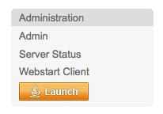
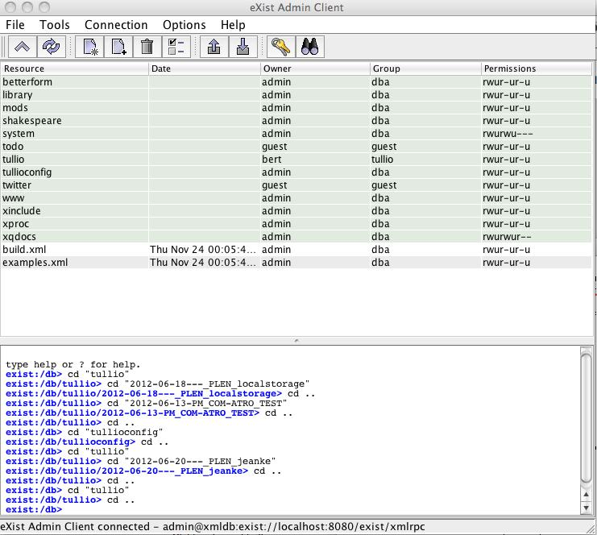
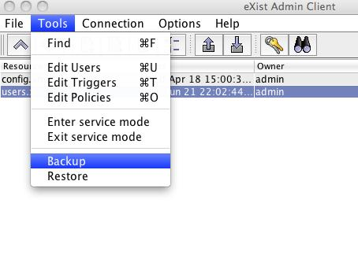
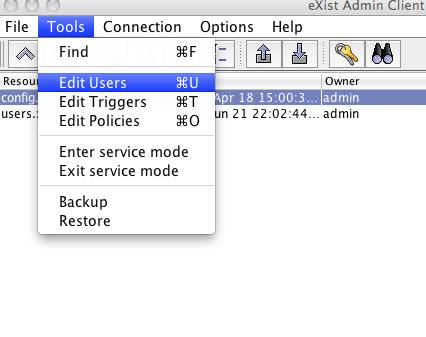
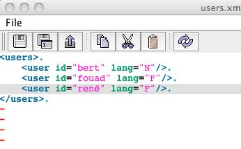

Toegang tot de Tullio DB client
Ga naar [servername]/exist/index.xml
De Java web client kan worden gestart via de link links onderaan:

username = admin
wachtwoord = het admin wachtwoord
Biedt toegang tot de inhoud van de database, rechtenbeheer, beheer van de gebruikers... Deze is georganiseerd als een file systeem, en toegankelijk via WebDAV.

Voor Tullio zijn er twee directories in gebruik:
tullio: bevat alle data voor het verslag
tullioconfig: bevat de taalkeuze van de gebruikers, en het serveradres waarop Tullio draait
Via de Java client kun je ook backups maken van de DB:

Een gebruiker toevoegen:
1. Toevoegen aan de lijst van gebruikers geconfigureerd in eXist
-

Taalvoorkeur instellen in het bestand tullioconfig/users.xml

Tullio installatie - filestructuur
De directory /exist/webapp bevat de webapplicaties die gebruik maken van eXist. Tullio is er daar een van. Alle code voor de tulliofunctionaliteiten bevindt zich in de map /exist/webapp/tullio
Deze code zit ook integraal in de github repository, met één uitzondering: de directory js-lib, die een aantal externe javascript libraries bevat.
De verschillende functionaliteiten van Tullio hebben in principe hun eigen map:
-agenda: invoer van de agenda
-assemblage: de assemblage homepage
-editor: de interface voor redactie en vertaling
-help: de help-pagina's
-newlogger: de interface om de vergadering mee te loggen
- status (momenteel niet gebruikt maar geeft simpel overzicht van de clips en hun status)
Deze mappen bevatten het overgrote deel van de code voor deze functionaliteit, met uitzondering van:
- gedeelde js-code specifiek voor tullio (js-shared)
- gedeelde js-libraries (js-lib)
- de scripts die interageren met de db (xq)
De andere mappen zijn dus
- js-lib
- js-shared
- soundmanager
- xq
- xml: bevat configuraties voor leden, macro's...
statusCodes.xml: bevat de statuten
events.xml: definities van de eventtypes
titles.xml:
- bevat korte stukjes tekst die worden gebruikt in macro's (l-elementen), bvb. <l id="startInt-F"><span class="incomplete">INTERPELLATION/INTERPELLATIONS</span></l>
- bevat de definities van de personen (zowel leden als regering, inclusief gegevens als bevoegdheden, taalvoorkeur, politieke partij...), bvb.
<person id="VANHALEWYN_Vincent" gov="no" group="Ecolo" lang="fr" gender="m">
<first>Vincent</first>
<last>Vanhalewyn</last>
</person>
<person id="GROUWELS_Brigitte" gov="yes" gender="f" lang="nl" group="CD&V">
<first>Brigitte</first>
<last>Grouwels</last>
<ti l="N" meeting-type="BHP">minister van de Brusselse Hoofdstedelijke Regering, belast met Openbare Werken en Vervoer</ti>
<ti l="F" meeting-type="BHP">ministre du Gouvernement de la RŽgion de Bruxelles-Capitale, chargŽe des Travaux publics et des Transports</ti>
<ti l="N" meeting-type="VVGGC">lid van het Verenigd College, bevoegd voor het Beleid inzake Bijstand aan Personen en Openbaar Ambt</ti>
<ti l="F" meeting-type="VVGGC"></ti>
</person>
Een nieuwe gebruiker aanmaken.
1. De gebruiker creëren als eXist-gebruiker via de Java client
2. De taalvoorkeur van de gebruiker definiëren in tullioconfig/users.xml
Een nieuw event-type aanmaken
Het event-type declareren in het bestand events.xml. Het zal automatisch verschijnen in de dropdown met event-types in de editor en de logger. (Wel een page refresh doen en de cache leegmaken.)
Een nieuwe knop aanmaken in de logger
1. In newlogger/logger.html de gewenste knoppenbalk opzoeken en een extra div toevoegen met een unieke id:
<div class="buttons" id="basic">
<span>Basis</span>
<div id="new clip" class="eventNotifier">
Vervolg / Suite
</div>
<div id="in NL">
Switch > NL
</div>
<div id="in FR">
Switch > FR
</div>
<div id="new NL">
Nieuwe spreker NL
</div>
<div id="new FR">
Nouvel orateur FR
</div>
<div id="PRES-SP">
VZ als spreker
</div>
</div>
2. In newlogger/buttonconfig.js deze id associëren met de gewenste karakteristieken:
"huytNL":
{
c:'true',
lang:'N',
type:'NEW',
speaker:'HUYTEBROECK_Evelyne'
},
De mogelijke eigenschappen zijn:
{name: 'c', type:'bool' },
is het een clip of niet
{name: 'lang'},
welke taal (N, F, M)
{name: 'type'},
het event-type
{name: 'speaker'},
welke spreker => id gebruiken die in titles.xml wordt opgegeven
{name: 'props'},
niet nuttig
{name: 'textN'},
voor interpellatie, voorstel, resolutie... de titel in het Nederlands
{name: 'textF'},
idem in het Frans
{name: 'notes'},
commentaar
3. Als het om een nieuw event-type gaat, niet vergeten om het te declareren in events.xml
Macro's
Per event-type is er in principe een macro nodig. Alle macro's zijn te vinden in het bestand editor/xs/formattingRules.xsl
<xsl:template match="e[@type='SUITE']" mode="initialize-text">
<xsl:param name="lang" select="@lang"/>
<xsl:choose>
<xsl:when test="$lang='N'">
<p c="{@clip}" title="{@n}" class="comment">Vervolg (zelfde spreker)</p>
</xsl:when>
<xsl:when test="$lang='F'">
<p c="{@clip}" title="{@n}" class="comment"></p>
</xsl:when>
</xsl:choose>
<p c="{@clip}" >...</p>
</xsl:template>
Aandachtspunten:
- 'mode' moet 'initialize-text' zijn
- steeds een parameter declareren voor de taal
- rekening houden met de twee talen
- macro's maken paragrafen aan (p-elementen) die een bepaalde klasse hebben. In deze paragrafen kunnen span-elementen voorkomen voor stukken tekst die de redacteur moet nakijken / vervolledigen.
- het c-attribuut is altijd nodig
- het title-attribuut is enkel nodig voor tekst met een specifieke status, zoals een titel
// block level styles
{name:'Comment',element:'p', attributes:{class:'comment'}},
= commentaar, nuttig voor de redacteur
{name:'Procedure',element:'p', attributes:{class:'proc'}},
= proceduretekst, wordt niet cursief in vertaling
{name:'Big Title',element:'p', attributes:{class:'title1'}},
{name:'Subtitle',element:'p', attributes:{class:'title2'}},
{name:'ORD',element:'p', attributes:{class:'title3'}},
{name:'INT',element:'p', attributes:{class:'title4'}},
{name:'Salle / Zaal',element:'p', attributes:{class:'realia'}},
=> zijn allerlei soorten titels
// Inline styles
{name:'OK (vérifié)',element:'span', attributes:{class:'checked'}},
=> voor tekst die is nagekeken (namen van instellingen bvb.)
{name:'Incomplete',element:'span', attributes:{class:'incomplete'}},
=> voor tekst die uit macro komt maar door de redacteur moet worden nagekeken
{name:'Orateur / Spreker',element:'span', attributes:{class:'speaker'}}
=> voor de sprekersaanduiding (bold)